Home / Art Gallery / Mail Coaches on Stamps
Mail Coaches on Stamps
From the original Art on Stamps archive
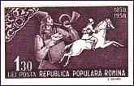
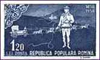
Coach, four-wheeled, horse-drawn carriage, used to carry passengers; today the term is also used to refer to a railway passenger carriage or a long-distance, well-appointed bus. Fundamental features of coach design include a heavy body suspended on springs and equipped with side doors and front and rear seats; a roof that forms part of the body; and an elevated seat for the driver, which is attached to the front of the body. The name coach is derived from Kocs, a village in northwest Hungary, where carriages of this kind were first conceived, probably in the 14th century. In its early development, the coach was elaborately designed and was used predominantly by the European nobility and royalty for purposes of state. The bodies of these early coaches were suspended from iron standards on the axles with leather straps instead of springs. Tip: point to the stamps with the mouse index for more information.
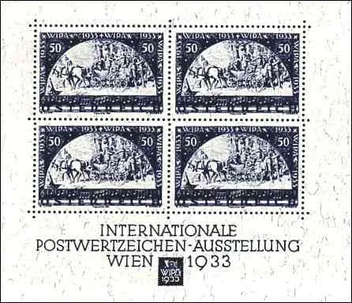
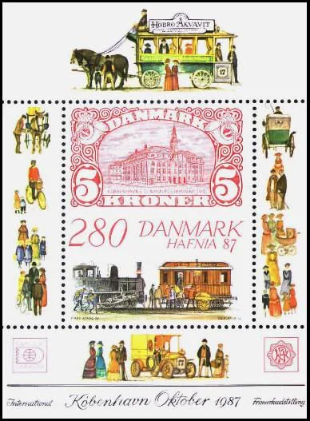
The first coaches were introduced into England about 1560, and soon thereafter Elizabeth I acquired her first state coach. Near the end of the 16th century the coach developed into the stagecoach, a public vehicle used for transporting passengers and goods, using fresh horses over each stage of the journey. The stagecoach was subsequently introduced into the United States, where it figured prominently in early intercity and interstate transport.
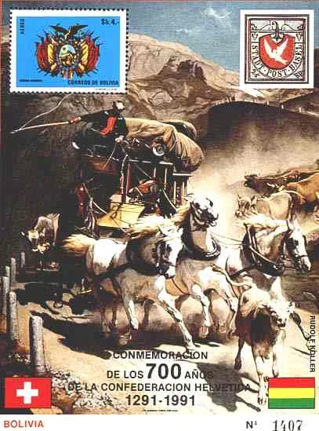
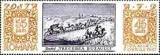
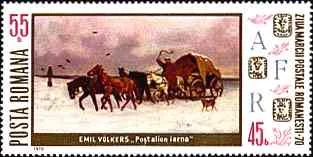
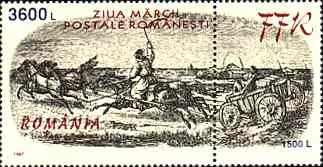
An extensive network of stagecoach routes had been established in England by 1750, and in 1784 the British government began carrying mail over these routes. As a result of improved roads, stagecoaches on many of the British routes were averaging, by the early 19th century, a speed of about 16 km/h (10 mph).
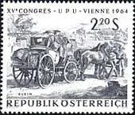
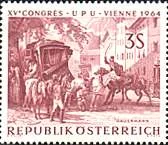
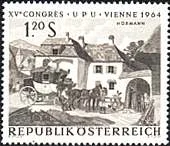
This speed was frequently exceeded on many of the American runs, notably those in the western frontier region. The railway gradually replaced the stagecoach as a means of transport. After Microsoft Encarta 1996.
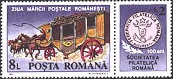
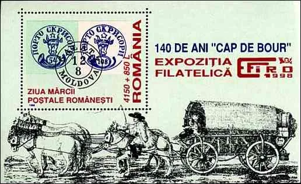
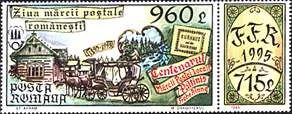
The stamps around the header were issued by Romania in 1958, the centenary anniversary year of the first Romanian ( Moldova ) stamps.
The Danish Hafnia 87 sheet was engraved by Czeslaw Slania and features the Central Post Office in Copenhagen. Courtesy of George Kringelbach, DK.
The WIPA sheet (Scott B111) was issued on June 23, 1933 in order to commemorate the International Philatelic Exhibition in Vienna. In addition to the postal value of 50g the stamp was sold at a premium of 50g for charity and of 1.60s for the admission fee to the exhibition. (After Scott). It is one of the most prestigious and scarce issues of Austria. That's why I show here only a facsimile, issued in 1981.
The eight values commemorating the 15th UPU Congress in Vienna (May-June 1964) were issued by the Austrian P.A. on 15th of June 1964. Three of them, dedicated to mail coaches, are shown above.
The Romanian coaches stamps were issued year after year, in order to commemorate the stamp day, the surtax being destined to supporting the Romanian philatelic society. In time this society carried different names, like AFR = Asociatia Filatelistilor Romani, then FFR = Federatia Filatelica Romana). It's interesting to follow on these stamps the effect of the currency inflation. The earlier stamps were a long time constantly priced at 0.55 Lei + 0.45 Lei, and this till the end of the 1970th. The face value raised to 3.50 + 3 Lei (1983, not shown), to 8 + 2 Lei (1991), to 960 + 715 Lei (1995), reaching the apogee of 3600 + 1500 Lei (1997).